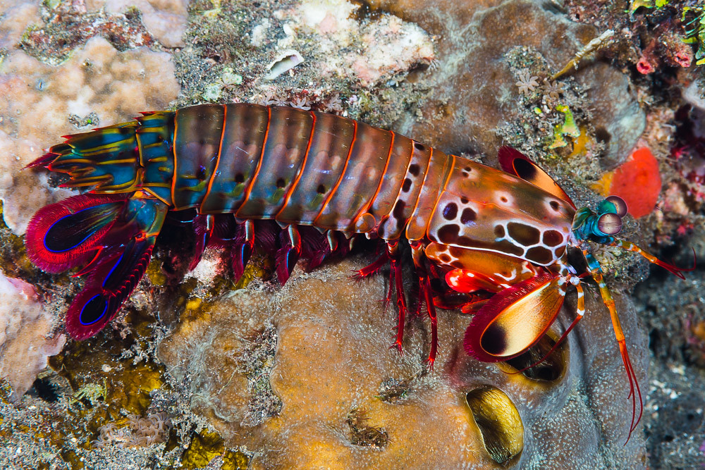

Sobre
Stomatopoda (ou estomatópode) nome científico Odontodactylus scyllarus, chamados popularmente de tamarutacas ou de lacraias-do-mar no Brasil, é uma ordem de crustáceos marinhos da subclasse Hoplocarida, que agrupa cerca de 400 espécies, caracterizadas principalmente pela morfologia da segunda pata torácica, que é modificada em apêndice subquelado, lembrando uma pata de louva-a-deus.

| Reino | Filo | Subfilo | Classe | Subclasse | Orderm |
|---|---|---|---|---|---|
| Animalia | Anthropoda | Crustacea | Malacostraca | Hoplocarida | Stomatopoda |
Fatos sobre o Stomotopoda
Visão Apurada

Os estomatópodes são predadores ativos que caçam presas com o auxílio de um sentido de visão muito apurado e capaz de interpretar polarização no espectro ultravioleta e infravermelho). Apresentam uma grande variação de tamanho, que pode ir de poucos milímetros até aproximadamente 40 cm nas espécies maiores.
Valente Boxeador
O segundo par de patas, muito desenvolvido, é usado tanto para atacar a presa como para se defender. O urópodo, quando aberto, também funciona para defesa, como um escudo, fechando a galeria em que o animal esteja instalado.
Perfurador e Esmagador

Devido a uma diferença anatômica de seus apêndices, o Camarão Mantis pode ser classificado em dois grupos: os que têm ataque perfurador (spearers) e esmagador (smashers). Com isso, os esmagadores são considerados um dos animais mais fortes e velozes do planeta, por terem um ataque rápido como uma bala e forte como um touro.